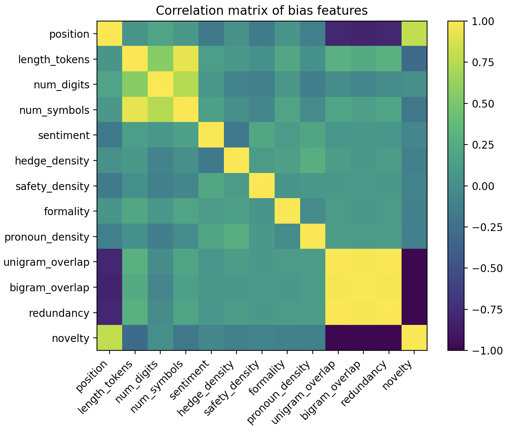
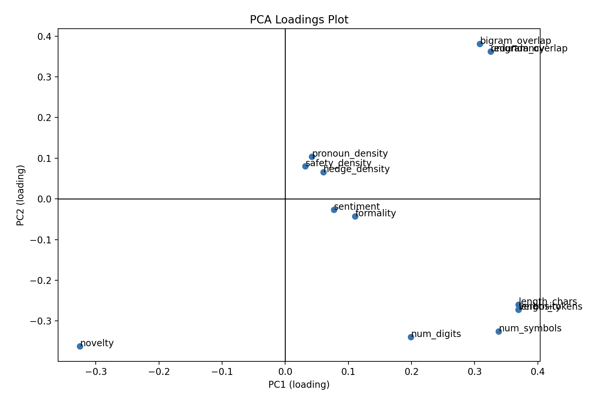
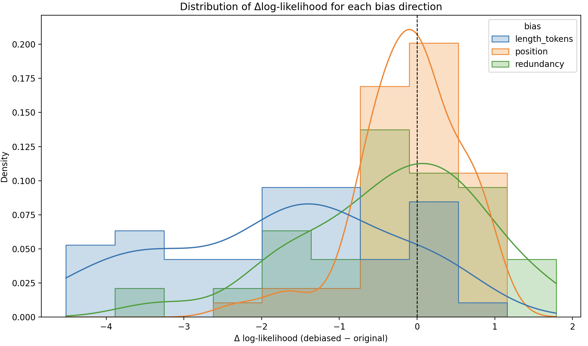

| Judging the Judges: Probing and Causal Debiasing of LLM-as-Jury Evaluators | |||
| Audrey Wei | |||
| Final project for 6.7960 Fall 2025, MIT | |||
Results & Discussion
3.1 What biases exist in the LLM-as-jury?

Figure 1. Correlation matrix of extracted bias features across all answers.
The correlation matrix shows that several bias features naturally cluster. Redundancy, unigram overlap, and bigram overlap are almost perfectly correlated, forming a single “prompt-copying” axis with novelty as its inverse. Length-related features (tokens, characters, digits, symbols) form another coherent group, indicating that verbosity behaves as a consistent stylistic mode. In contrast, position, sentiment, hedging, safety language, formality, and pronoun density have only weak correlations with other features, suggesting they represent distinct bias mechanisms worth analyzing separately.

Figure 2. PCA loadings of bias features, showing how each bias contributes to the top two principal components.
PCA loadings confirm this structure: one principal component is dominated by length/verbosity, while another is dominated by redundancy and overlap. Stylistic indicators such as pronoun density, sentiment, hedging, safety, and formality occupy a separate, weaker axis of variation. Importantly, none of these components aligns strongly with correctness, anticipating our later result that stylistic biases are largely orthogonal to answer quality.
We find that all features are only weakly correlated with human correctness; even the largest effects (length, redundancy, novelty, unigram overlap) are on the order of 0.05–0.06. Hedging, safety language, formality, and pronoun usage are even less predictive. This supports our hypothesis that surface style is not a reliable signal of quality and should be treated as bias rather than a useful evaluation feature.

Figure 4. PCA projection of bias features, colored by answer position (A vs. B).
Surprisingly, answers from slots A and B separate cleanly in the PCA space, meaning that the two positions induce distinct stylistic regimes (e.g., in length, redundancy, and overlap). Because PCA is unsupervised, this indicates that position is not just a dummy index but changes how answers are written, helping explain why LLM judges often show strong position bias.
3.2 Causal interventions on bias directions

Figure 5. Distribution of Δ log-likelihood (debiased − original) across three bias directions:
length_tokens, position, and redundancy. The dashed line marks zero change.
Projecting out the position direction consistently increases log-likelihood for human-preferred answers, indicating that position bias actively harms the judge’s performance and can be removed without sacrificing useful signal. Intervening on redundancy yields smaller but mostly positive shifts, suggesting a moderate, recoverable bias toward copying the prompt. In contrast, removing the length_tokens direction often reduces log-likelihood, implying that what looks like a verbosity “bias” actually carries information the model relies on to score answers.

Figure 6. Effect of debiasing on Δ log-likelihood, split by human correctness and bias type.
When we split Δ log-likelihood by human correctness, the picture sharpens. Removing position bias improves scores for both correct and incorrect answers, but the gains are largest on pairs that were initially misjudged, directly supporting our hypothesis that position is a harmful bias. For length_tokens, debiasing consistently harms both groups, confirming that length is entangled with genuinely useful cues. Redundancy lies in between: debiasing helps on many misjudged examples but has smaller effects elsewhere. Overall, these interventions show that not all “biases” are equal—some are safe to remove, while others behave more like compressed heuristics for quality.
3.3 Where do correctness and biases live in the network?
Sparse probes reveal a striking gap between correctness and stylistic biases. Features such as length, position, redundancy, sentiment, and formality become highly decodable (≥0.9 accuracy) by very early layers (around layers 5–10) and stay that way throughout the network. Correctness, by contrast, never becomes linearly decodable and hovers near 0.55 across all layers. This directly supports our hypothesis: biases align with simple low-dimensional directions, whereas correctness does not.
The correlation heatmap shows that most bias features share very similar layer-wise decodability profiles, forming a tight cluster that we can think of as a “style manifold.” Correctness is the clear outlier: its probe accuracy profile is only weakly or negatively correlated with those of other targets. Combined with the high sparsity of successful bias probes, this suggests that stylistic preferences are encoded in a compact, structured subspace, while correctness is distributed and not directly tied to any single set of dimensions. In other words, LLM judges make decisions in a space where bias is geometrically simple but correctness is geometrically messy.
Taken together, the descriptive statistics, causal interventions, and probing results support our main hypothesis. LLM-as-jury systems encode many stylistic biases as clear directions that we can decode and manipulate. Some of these, like position, are genuinely harmful and can be removed to bring the judge closer to human preferences. Others, like length, function more like heuristics that correlate weakly with quality and are risky to zero out. Correctness itself never becomes an easily accessible feature, highlighting a fundamental mismatch between what is easy for the model to represent and what we actually want it to reward.